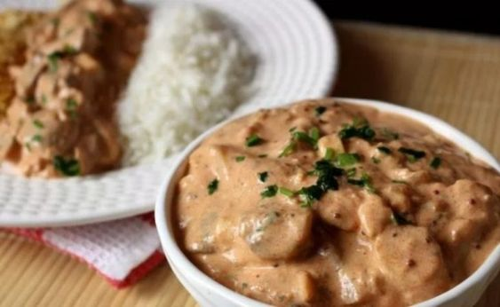

Estrogonofe de Cogumelo
Ingredientes
- 150 gramas de cogumelo Paris fresco
- 1/2 cebola
- 500 ml de creme de leite fresco
- 30 ml de extrato de tomate
- 30 ml de mostarda Dijon
Instructions
- refogue o cogumelo e a cebola em uma panela.
- em uma tigela, misture extrato de tomate, mostarda e um pouco de água
- despeje a mistura na mesma panela, mexa por 30 segundos para incorporar os resíduos do fundo
- adicione creme de leite, reduza por cerca de 5 a 7 minutos, mexendo por vezes
Tempo de Preparo
40 minutos
Seja o primeiro a comentar!!!